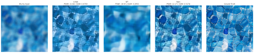
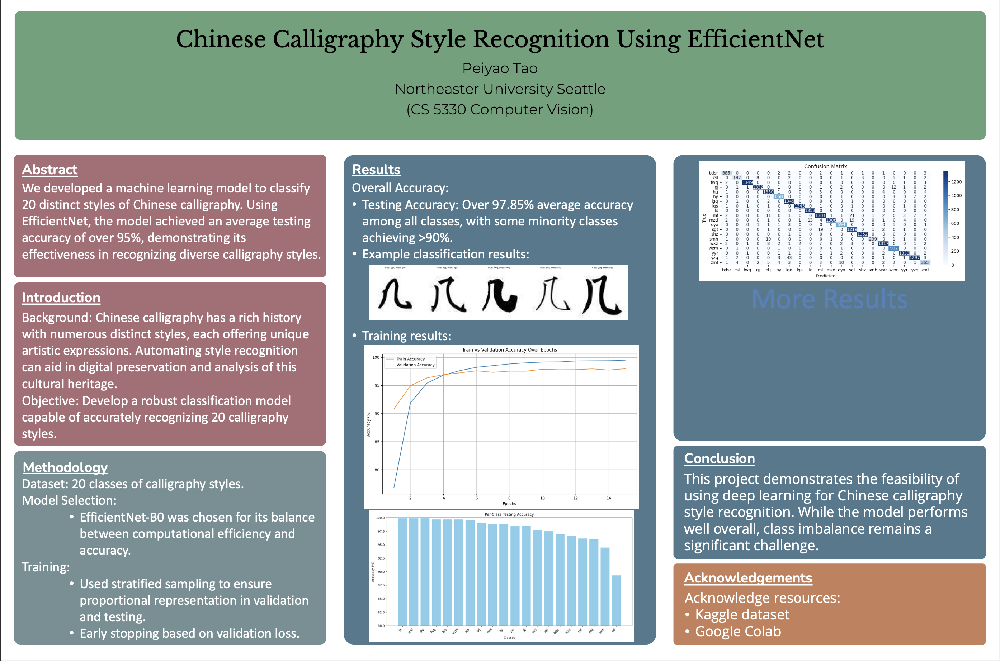

Hi, I'm Peiyao Tao.
I build systems that leverage computer vision and machine learning to solve real-world problems.
About Me
I am a second-year MSCS student at Northeastern University with a strong foundation in Data Structures, Algorithms, and Software Development. I have hands-on experience in Python, C++, and Java, and I am proficient in using libraries such as OpenCV and TensorFlow. I enjoy solving complex problems and learning new technologies. My interests lie in Machine Learning, Computer Vision, and Game Development.
My Work Experience
AI Developer Intern
Fenghua Railway Informatization Co., Ltd. - 05/2024 ~ 08/2024
- Built and labeled a dataset of 200+ images and trained a YOLOv5 object detection model that achieved 95.8% test accuracy and ran in real-time on video streams.
- Partnered with cross-functional engineers and safety teams to ensure the model aligned with field deployment requirements.
My Projects
Comparative Analysis of Deblurring Models (Python)
Main developer | Advisor: Dr. Bruce Maxwell, Professor of Computer Vision - 09/2025 ~ 09/2025
- Developed and compared a CNN-based U-Net against a Transformer-based Swin-Unet for high-fidelity image deblurring.
- Engineered a hybrid Swin-Unet with multi-scale skip connections and enhanced the U-Net decoder with Efficient Channel Attention (ECA) principles to achieving state-of-the-art, artifact-free results.
- Implemented an advanced training pipeline using perceptual loss (VGG), a learning rate scheduler, and early stopping to maximize performance.
Calligraphy Style Recognition (Python)
Main developer | Advisor: Dr. Bruce Maxwell, Professor of Computer Vision - 09/2024 ~ 12/2024
- Developed a machine learning model based on EfficientNet50 for classifying Chinese calligraphy styles.
- Applied stratified sampling techniques and attention mechanisms to improve model performance and reduce overfitting.
- Collected and preprocessed a dataset of 8,000+ images, achieving 97.9% average accuracy in style classification.
Discord Study Group Bot (Java)
Lead developer of team of four | Advisor: Prof. Alexander Lash, Professor of Software Engineering - 09/2024 ~ 12/2024
- Led the design process of a discord bot from scratch to make it easier for students to organize study groups.
- Used MongoDB to store user data and study group information.
- Developed the feature that sends reminder notifications through discord direct messages to users before scheduled meeting times and allow users to customize their own reminder lead time.
Augmented Reality Chessboard (C++)
Main developer | Advisor: Dr. Bruce Maxwell, Professor of Computer Vision - 09/2024 ~ 12/2024
- Developed an augmented reality chessboard application using OpenCV and OpenGL, displaying virtual chess pieces on a physical board.
- Implemented real-time piece recognition and tracking using computer vision techniques, achieving 85% accuracy in piece projection.
Chatroom Application (Java)
Main developer | Advisor: Dr. Brian Cross, Professor of Programming Design Paradigm - 09/2023 ~ 12/2023
- Designed a chatroom application using Java and WebSocket for real-time communication.
- Used threadpool for handling up to 10 clients at a time.
- Implemented a simple random compliment grammar generator for clients to greet others.
Fitex Farmers Market (C#)
Developed with a team of four | Advisor: Dr. Donald Scott McCrickard, Professor of Human-Computer Interaction Capstone - 02/2023 ~ 05/2023
- Designed a game using Unity that collects player's daily step and uses step counts data to grow virtual crops on their farm.
- Implemented a quest and group challenge generator, which generates daily and weekly challenges for users with adaptive difficulty based on player level and unlocked crop types.
Bullet Hell Game (C#)
Main developer - 02/2022 ~ 05/2022

- Developed a bullet hell game using Unity where players control a spaceship and must dodge incoming bullets.
- Implemented a power-up system that allows players to enhance their abilities by collecting power-ups and wing ships to protect themselves from enemies.
Get In Touch
I'm always open to new opportunities and collaborations. Feel free to reach out!
Send me an email